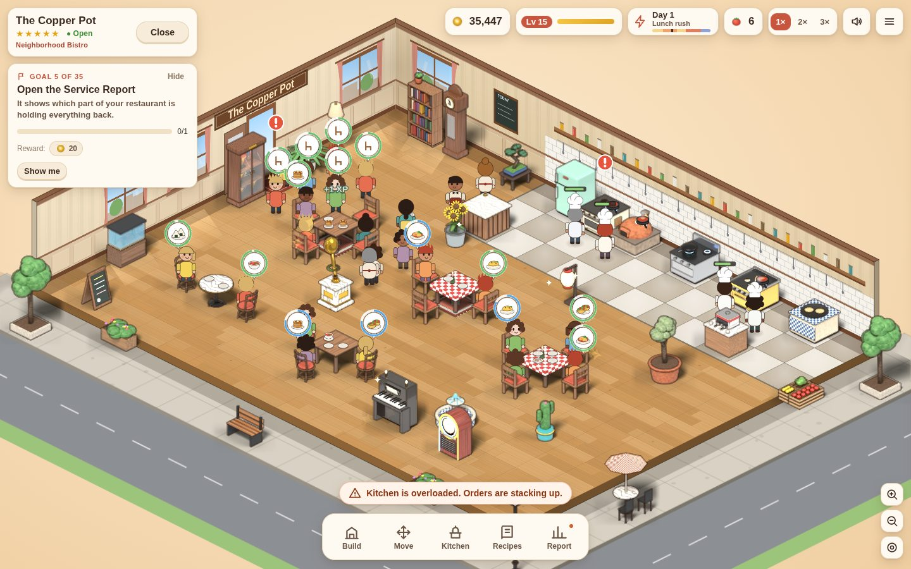

Independent game studio · Panama
Cozy games from the land between two oceans.
We are IsthmusGames, a tiny indie studio in Panama. Our first game, Neighborhood Kitchen, is out now and free to play in your browser.
Our game
Neighborhood Kitchen
Your little café. Your next big idea.
Start with a tiny corner café and make it yours. Arrange the tables, choose your dishes and watch your chibi team cook, serve and clean. Spend your next handful of coins on a new recipe, another cook or the perfect piece of furniture.
Run an Italian trattoria, a Japanese kitchen, a Greek taverna or an all-day diner. Grow a few ingredients outside and turn first-time guests into neighborhood regulars.
- 62recipes to discover and master
- 13neighbors to get to know
- 6neighbor restaurants to visit
- Freeno ads, no in-game purchases
Single-player · Runs in your browser, no download · Desktop recommended · In development, with new updates almost every week.

The studio
Small studio, narrow strip of land, big plans.
IsthmusGames is an independent studio from Panama, the isthmus that joins two continents and separates two oceans. Our emblem is that idea in one picture: a little island shaped like a controller.
We make warm, unhurried games that respect your time, and we build them in the open with the people who play them.
-
Free and fair
Neighborhood Kitchen is free to play, with no ads and no in-game purchases.
-
Always cooking
The game is in active development and new updates land almost every week.
-
Shaped by players
Comments on itch.io reach us directly, and Patreon supporters vote on what comes next.
Follow along